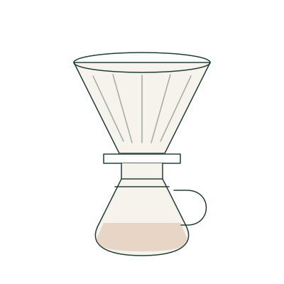
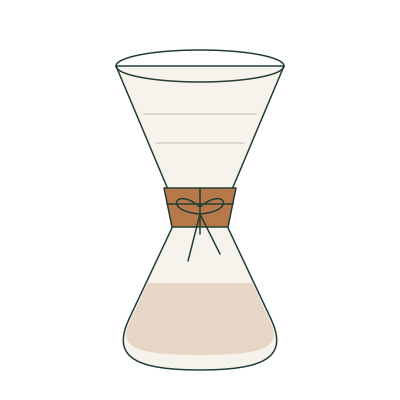
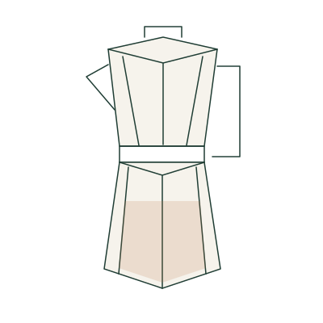
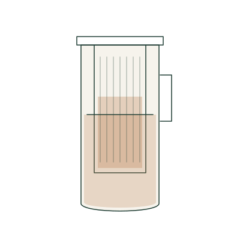
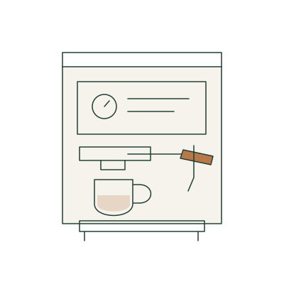
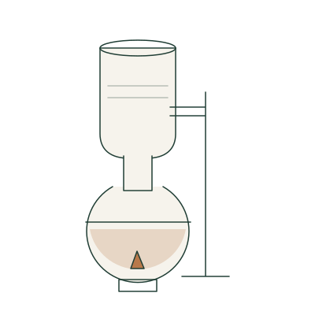
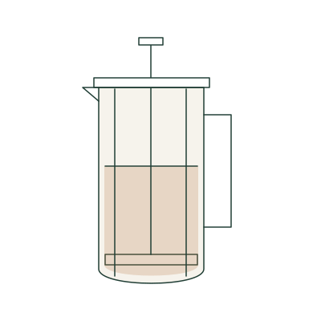

Melitta
扇形滤纸，经典手冲。
认识器具 基础跟练 进阶自由FIND YOUR WAY TO BREW
从喜欢的轮廓出发，找到自己的冲煮方式。

扇形滤纸，经典手冲。
认识器具 基础跟练 进阶自由
厚滤纸，清透口感。
认识器具 基础跟练 进阶自由
加热之后，咖啡升起。
认识器具 基础跟练 进阶自由
让冷水与时间相遇。
认识器具 基础跟练 进阶自由
用压力凝聚风味。
认识器具 基础跟练 进阶自由
观察水的上升与回流。
认识器具 基础跟练 进阶自由
浸泡之后，缓缓下压。
认识器具 基础跟练 进阶自由